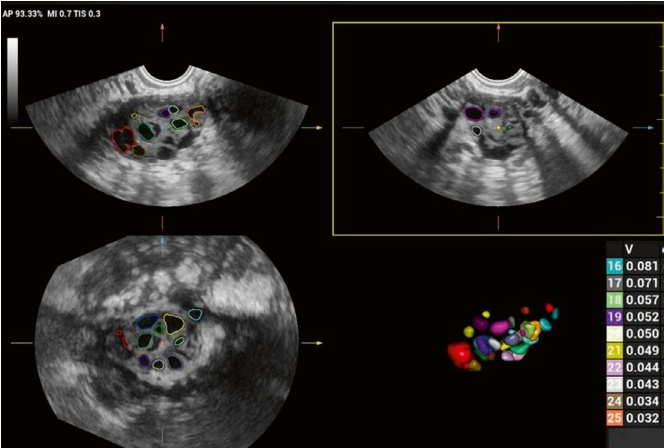

(b) 3D超声辅助诊断多囊卵巢
多囊卵巢综合征（PCOS）是一种以高雄激素血症、排卵功能障碍和多囊卵巢为特征的疾病，影响约8%–13%的育龄期女性[7]；1990年美国国立卫生研究院（NIH）的标准被广泛用于诊断PCOS。然而，直到2003年，欧洲人类生殖与胚胎学学会（ESHRE）和美国
(b) 3D ultrasound-assisted diagnosis of polycystic ovaries
Polycystic ovary syndrome (PCOS) is a condition characterized by hyperandrogenemia, ovulatory dysfunction, and polycystic ovaries, affecting approximately 8%–13% of women of reproductive age [7]; the National Institutes of Health (NIH) criteria from 1990 were widely used to diagnose PCOS. However, it was not until 2003 that the European Society of Human Reproduction and Embryology (ESHRE) and the American Society for

生殖医学（ASRM）已将诊断标准扩大到包括对卵巢的影像学评估 [8]。
超声检查一直是评估多囊卵巢形态（PCOM）的主要工具。然而，通过二维超声确定是否存在多囊卵巢本质上是主观的。相比之下，三维超声通过提供窦卵泡的数量和平均直径以及卵巢体积的自动测量和定量分析，提供了更准确、更客观的评估（图2.18）。这项技术可以增强对卵巢的评估，与传统的二维方法相比，可实现更精确的测量。
此外，当结合彩色多普勒超声时，三维超声能够对卵巢血流指标进行定量分析，例如血管化指数、血流指数和卵巢间质动脉的血管血流指数。这些指标为评估卵巢健康提供了额外的见解，有助于更好地了解多囊卵巢的血管化情况[9–11]。
尽管有这些优点，一些研究表明，与二维超声相比，三维超声检查可能会高估或低估窦卵泡的数量。这种差异可能是由于缺乏公认的超声测量相关参数的标准 [12]。因此，虽然三维超声对多囊卵巢综合征（PCOS）显示出有前景的诊断，但仍需要进一步的研究来标准化技术并提高这些测量的准确性。
Reproductive Medicine (ASRM) expanded the diagnostic criteria to include imaging evaluation of the ovaries [8].
Ultrasonography has long been the primary tool for evaluating polycystic ovarian morphology (PCOM). However, determining the presence of polycystic ovaries through 2D ultrasound is inherently subjective. In contrast, 3D ultrasound provides more accurate and objective assessments by offering automatic measurement and quantification of the number and mean diameter of antral follicles and the ovarian volume (Fig. 2.18). This technology can enhance the evaluation of the ovaries, allowing for more precise measurements compared to traditional 2D methods.
Furthermore, when combined with power Doppler, 3D ultrasound allows for the quantification of ovarian blood flow indices, such as the vascularization index, blood flow index, and vascular blood flow index of the ovarian interstitial arteries. These indices provide additional insight into ovarian health and can aid in better understanding the vascularization of polycystic ovaries [9–11].
Despite these advantages, some studies have suggested that 3D ultrasonography may overestimate or underestimate the number of antral follicles compared with 2D ultrasound. This discrepancy is likely due to the lack of a universally accepted standard for measuring relevant parameters by ultrasound [12]. As a result, while 3D ultrasounds show promising diagnoses of PCOS, further research is needed to standardize techniques and improve the accuracy of these measurements.